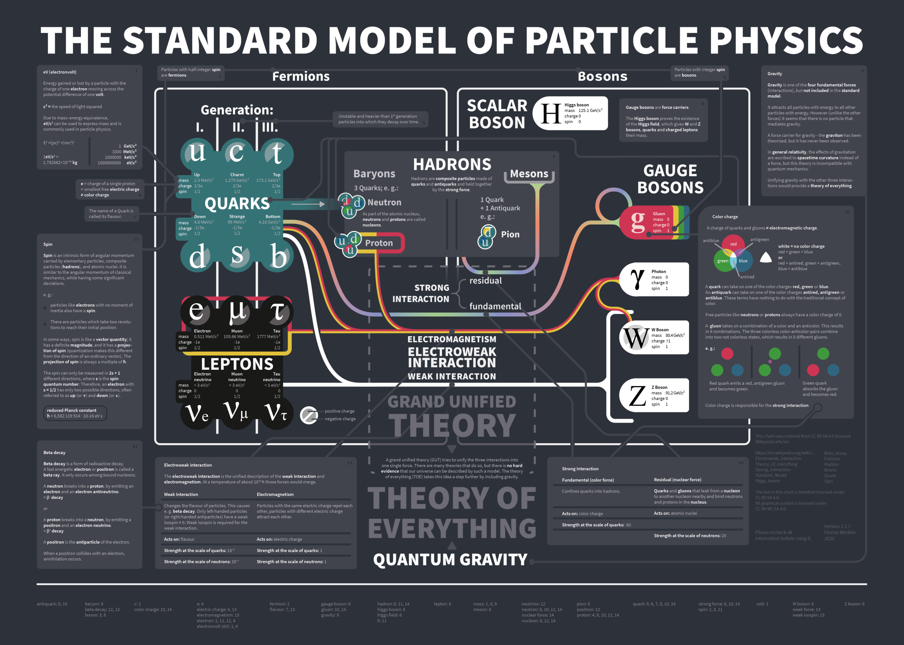

Platonic hypostasis, epistemological indifference and fraudulent greed: The lazyness of the killers of natural philosophy

It is very difficult to get a so called particle/theoretical "physicist" to admit they don't care their theories are not scientific.
Of course, they equate sciente = truth, so their ego, in first instance, won't allow them to say what they're doing is not science.
In other words, it's hard to get them to entertain the idea of not actually doing science.
And you might be thinking that obviously a scientist would not simply agree they're not, with no discussion at all happening, but the thing is that they avoid discussion.
Ask any of this "I love science" types what science is, and they'll give a philosophically illiterate answer, and once you point that out, they'll accuse you of being le unprestigious philosophy enjoyer instead of le prestigious science enjoyer.
"Philosophy is irrelevant" they might say, "because we deal with true and honest things, you see, objective reality we uncover, we care not about subjective ideas like those of philosophy".
Glossing over the fact that Aristotle put together science itself, that the history of science is one of trying to comprehend god, that physicists used to be called natural philosophers up to the times of Newton whose prestige they still dare to tarnish, and that the questions of science are philosophical ones, along with science itself.
Science is a philosophy, lmao, and the knowledge it generates is objective, yes, but founded and nourished on the thoughts of many philosophers. It just would not be the same without Immanuel Kant or Karl Popper, for instance.
Ask them what science is, and they won't be able to give a concrete answer, because they do not know and never cared to know. Use socratic questioning on them and try to understand their epystemology, and you'll be dissapointed that it always is anti-scientific and platonistic.
You'll have to take my word for it, but after several hours of back and forth, usually over multiple days, if you direct things right, you'll get them to admit they don't actually care if the explanations their theories give are correct, because their predictions are.
And that's the gist of it; in their flawed epystemology, a predictions being correc immidiately turns real any explanation that is coherent with it, with no regards to what the explanation is exept for it being platonic, but I'll touch on that later.
And here's the trick, it's always trivial to 'predict' something if you simply adjust your "theory" to include any new and out of rule behaviour, like that of neutrinos, when the calculations simply didn't work, A.K.A. the prediction failed, but then they made the mistake of believing this disparity in the energy that came in and out was caused by a new particle simply not being detected.
I want to rub this in, hard, that the evidence of the existence of the neutrino is the fact that the predicitions went wrong, predicted wrong, but weren't accepted to simply be wrong, instead to be right with a 'but'.
And in order to detect a neutrino, you need to assume that it exists, thus all evidence yet of neutrinos existing is "look at this energy disparity, it is exactly this many neutrinos", which, in rational words actually means "the predictions are wrong by this many fake particles".
And hey, neutrinos can be mathematically described, thus for many snobs they're very convincing; if the explanation for the energy disparities by the WRONG predictions was "god did it", and istead of saying "the matter decayed into this many neutrinos" it was said "god is hiding this many holy units of matter", they would say the explanation is completely unconvincing, however both explanations are based on the same principle, that they explain.
And where is the scientific criteria to say "god did it" is not scientific but "the matter decayed"?, nowhere, because these people hate philosophical questions.
Instead of a scientific criteria they have a platonic criteria, simply put, "god did it" is not mathematical, "n→p+e−+νˉe" is
Ultimately, the harder you try to ask how you can justify saying that neutrinos, or the other hundreds of shit they've invented like antimatter, strange matter, quarks, flavors of literally everything, and anti-particles and like a dozen forces and apparently an arbitrary number of dimensions all existing in infinitly many parallel universes, the more they obfuscate and lie and intimidate and commit fallacies, basically persuading you of not asking so many questions that nobody cares to answer.
By the end of it, you can sometimes get them to admit that "if the predictions are correct, what does it matter if we got the right explanation?, what difference would it make?"

This is the difference: Search on the internet for the "standard model" (last time I checked "leptons" hadn't been invented lol), look at it, be confused, or amazed, and they let this sink it: Before this quantum bullshit, everything could be explained in terms of the speed of light and the planck distance, along with protons, electrons and neutrons, nothing else; and the worst part is that with all this other sketchy things they've invented over the years, turning the status quo of research into a spaghetti factory, there have been exactly 0 steps towards answering the old questions space and time could not answer.
"But if the predictions are correct, what does it matter if the explanation isn't right?", this is why it matters: you're predicting stuff that doesn't exist.